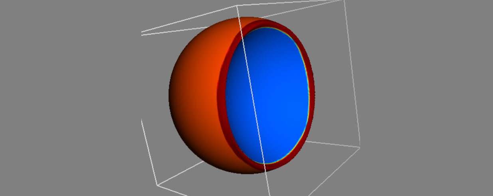

Summary
This is a summary of my work during the labs in the course Modelling and Animation at Linköping University during the spring of 2020. The course consisted of 6 labs covering topics within computer graphics implemented in C++ and OpenGL.
The content of the course was the half-edge mesh data structure and how curvature could be implemented using different numerical methods and investigate their influence on performance and correctness. Followed was the implementation of decimation of a mesh using the quadric error metric that allowed for multiple analyses of the correctness of newly places vertices when collapsing a specific vertex and the cost of decimating. After we had explored how a decimating process could be implemented, the next focus was on making the mesh more detailed and with the use of the cubic B-spline, a subdivision algorithm was implemented. With this, an additional subdivision method of our own choice was created and we used frustum culling and the position of the camera for our subdivision.
Since there exists moments when the half-edge mesh representation (and explicit methods to be specific) is optimal, we moved on to the representation of surfaces using implicit equations and the level set method. With the use of boolean operators and super elliptic blending, we could combine simple primitives into larger level sets, but still being able to represent them in an easy way. Additional tasks such as curvature and morphing was implemented in this stage as well. The final lab was focused on creating a simulation based on the Navier-Stokes equations in order to simulate fluid. All the labs was conducted in collaboration with Linus Mossberg.
Technical Walkthrough
Following is a short summary and snapshots from each lab session, six labs in total. Each lab was summarized in a 5-7 long lab report with focus on reading lab reports from research within computer graphics related to the specific topic.
Lab 1 - The Half-Edge Mesh
In order to represent a 3D-object within computer graphics, a polygon mesh is used to represent the object as a collection of vertices, edges and faces. Various data structures can be implemented in order to store information about the mesh and for rendering purposes, a polygon soup may be enough, but for additional processing such as computation of topological properties and altering of the shape, an easy access to connectivity information within the mesh is vital in order to perform efficient calculations. One data structure that holds additional connectivity information about the mesh is the half-edge mesh data structure. In this laboratory, the half-edge is implemented and used to classify manifolds and calculate physical attributes of the mesh, such as area, volume, normals and curvature. The discretization and its influence is evaluated and the resulting approximations of mesh properties are compared to the theoretical values.
Firstly the half-edge mesh structure was built up using by first adding the faces to the half-edge mesh and connect the edges and vertices according to the figure below. For each face, the vertices was stored in a vector and with the use of a generally approach so the structure could further be extended into handling quads and not only triangles. The half-edges with its pairs was created and stored in another vector, the inner ring was connected and finally a face was created, its normal calculated and then stored in a vector of faces. Every vertex normal was also calculated for all the vertices in the halfedge mesh. The next task consisted of calculating the surface area of the mesh. The usage of the neighbouring information from the previous task could be used in order to sum the areas of the neighbouring faces.
A visualization of the half-edge mesh data structure and how the connectivity is built up.
The task of implementing the curvature was performed according to a comparison based approach where both the Gaussian curvature and the mean curvature was to be implemented. The formulas for curvature uses the area and both the area spanned up by the cross product of any two edges in the triangle and the Voronoi area was implemented in order to compare them to each other.
To the left, curvature visualized using mean curvature and Gaussian curvature using normal area calculations. To the right, the mean curvature and the Gaussian curvature visualized with Voronoi area calculations, where a much more accurate is displayed.
The task of calculation the genus of the mesh use the Euler-Poincaré formula, V-E+F-(L-F)-2(S-G)=0. Since the application described in this report only uses triangles in order to represent the meshes, there will only exist one single loop for each triangle and therefor the number of loops will be equal to the number of faces.
The final task consisted of computing the number of shells for each mesh. This was computed using a flood fill algorithm and uses two unordered sets, one that is initialized with all the vertices in the current mesh that should be visited. Another unordered set is used to keep track of the visited vertices. The algorithm takes use of the vector storing all vertices, in order to gather all the vertices in the mesh and continuously visit them by using the neighbouring information. By starting with a random vertex and then continuously visit the neighbouring vertices and adding them to the set of vertices to visit, we can traverse the mesh until there are no more vertices to visit. If we reach a point where all neighbouring vertices has been visited for the current vertex but there still exists unvisited vertices, there exists an additional shells. By repeating this process, we can conclude the number of shells for the entire mesh.
Test meshes in order to conclude that the shell calculations was correct.
Lab 2 - Mesh Reduction
Polygon meshes can be implemented to have an extremely high level of detail and the amount of vertices that builds up a mesh may even be too many in order to be able to see this level of detail represented on a computer screen, and will instead take up excessive memory usage. In order to lower the memory cost while obtaining a mesh that still provides a good representation of the original mesh, a decimation is needed. In this laboratory, the quadric error metric was used as a way to implement edge collapse for manifold meshes represented by the half-edge data structure. Further more, an error metric that uses the camera position and the size of the faces as a cost heuristic was implemented as a base for decimation. Lastly, a method to visualize the quadric error metric was implemented that visualizes the isosurfaces of the quadratic shape which provides additional information and description how the error when collapsing edges and moving vertices corresponds to the error metric.
Edge collapse is performed through defining the cost for removal of each edge in the mesh and then remove the edges with the lowest cost. The calculation of the cost can be performed in a number of different ways and the main focus of this laboratory consist of implementing the quadric error metric as well as defining an additional cost heuristic. For each face, the fundamental error quadric is calculated. The position of the associated vertex is used and with the face normal, n, we can formulate the plane according to p = [vx,vy,vz,−n·v]' = [a,b,c,d]'. The task of implementing the quadric error metric depends on three functions. The function createQuadricForFace() calculates the fundamental error quadric, then the function createQuadricForVert() sums up the fundamental error quadrics and returns the matrix Q. All the matrices Q are being stored in the vector mQuadrics. Finally, the function computeCollapse() determine the cost for collapse for each half-edge. The compute collapse function uses a lambda function for computing the cost for a half-edge between the vertex v1 and v2 that has the quadric Q = Qv1 + Qv2, where the last row is set to be [0,0,0,1]. If this matrix is non-singular, Q inverted and the optimal vertex position is calculated and the cost is returned. If the matrix Q is singular, it is needed to compute the optimal vertex placement in another way. In our implementation, the current edge is subdivided along the edge between v1 and v2 where the cost is calculated for each position, then the position that provides the lowest cost is picked.
Decimation in multiple steps of a cow mesh.
Different ways to define the cost for edge or vertex removal exist and can be a single error metric, adding interaction from the user such as the possibility to mark certain vertices to keep, or a combination, such as the combination of vertex clustering based on principal curvature and the quadric error metric that is topological independent. Particular the combination of various approaches served as a starting point for the definition and implementation of our own error heuristic. The cost for collapsing an edge is in this case calculated by getting the camera position through GLViewer and calculate the distance between this position and the first vertex of the current edge. Then, to ensure that areas with higher details are collapsed over those that already have a low level of details, the average distance to the surrounding vertices from the first vertex of the current edge are calculated. The total cost for edge collapse is then given by cost = −camDistance + meanDist, camDistance is the distance to the camera and meanDist is the average distance to the surrounding vertices. Both the terms on the right hand side is normalized to the same order of magnitude.
The usage of this heuristic works well for the cow mesh when reducing to around half the amount of faces compared to the original mesh. When further decimation is performed, large dominant features on the side of the cow that is not facing the camera is collapsed before the details on the camera facing side which provides a non-sufficient result.
Visualization of the cost for edge collapse. To the left is our adaptive scheme using the camera position and the camera is set above the cow. To the right is the cost of edge collapse using the quadric error metric.
The final task of this laboratory consisted of visualizing the quadric error metric using isosurfaces. The technique for implementation is based on Cholesky decomposition. Firstly, a sphere geometry is generated to use for the isosurface ellipsoids and a cast to SimpleMesh is performed to allow vertex and face access. A multimap is used to hold all the isosurface ellipsoids and their properties, sorted by area. For each quadric Q in mQuadrics, a transformation matrix is defined that transforms a sphere to ellipsoid with the inverse of R, that is the Cholesky factorization of the current quadric Q given that if Q is a symmetric positive definite matrix, it can be factorized into Q = RTR where R is an upper triangular matrix. Then the corresponding ellipsoid is translated to the corresponding vertex position. After the calculations have been performed, the largest ellipsoids are added to the isosurface mesh according to a set constant flag for the number of ellipsoids.
When visualizing isosurfaces for the quadric error metric on the cow mesh, as can be seen above. It is noted that there are larger ellipsoids in flat regions and smaller ellipsoids in corners and detailed regions, such as the ears of the cow. This can be seen in other meshes as well, that the isosurfaces shows larger error regions in flat regions and smaller ones in corners. The isosurfaces displays that the quadric error metric works better for detailed areas with some curvature but worse for flat areas.
Lab 3 - Mesh refining
When objects are handled within computer graphics, they are represented by a finite number of vertices in the form of a mesh. Still, the objects strive to describe and represent visual similarity with continuous surfaces in real life. In order to achieve this, smooth curves and surfaces are essential for obtaining a realistic appearance. In this laboratory, uniform cubic B-splines are used as a way to perform curve and mesh subdivision. The splines are subdivided and evaluated with the use of basis functions, and the surfaces are subdivided using Loop’s subdivision scheme and lastly with the use of our own adaptive subdivision scheme. The results are evaluated with regards to how well this subdivision performs considering the number of function calls, accuracy and the visual appearance.
The first task consisted of implementing spline subdivision. It is possible to refine the inputted curve but maintaining its shape using knot insertion with the filter values for the cubic B-splines according to the evaluation mask [1/8, 1/2, 3/4, 1/2, 1/8].
The mesh subdivision was performed with the use of Loop’s algorithm, since this laboratory is limited to manifold meshes consisting of triangles. The task of subdivision consisted of computing a new vertex that replaces a vertex in the old mesh and placing it along an edge in the old mesh.
Mesh subdivision in multiple steps for a cow mesh.
The next task regarding the splines was to evaluate the analytical spline. The evaluation is performed by summation over a set of control points multiplied by basis functions. The basis functions for the uniform cubic B-spline can be used in order to calculate the current B-spline value. However, in order to avoid unnecessary function calls for the B-spline value we can take advantage of the fact that the B-spline value evaluates to 0 for all t outside of the range [t−2,t + 2] and thereby we do not need to calculate the value in these cases. By setting the limits to the range [t−2,t+2] and using a static cast to control boundary cases, the spline evaluation can be performed in a much more efficient way. To control that the implementation has been correctly performed, the sum of the coefficients can be printed to the console in order to check that they evaluate to the theoretically correct sum, 1.
The last task of this laboratory consisted of constructing and implementing an adaptive subdivision scheme for the subdivision of a mesh. Our algorithm performs frustum culling, back-face culling and triangle rasterization in screen space to determine if a face is subdividable or not. The algorithm works according to the following rules:
- • Faces that are not in frame should not be subdivided, decided by frustum culling
- • Faces that are not facing towards the camera should not be subdivided, decided by back-face culling
- • Faces that have a smaller area than a certain threshold in screen space should not be subdivided, decided by triangle rasterization
The calculations of frustum and back-face culling uses the projection matrices obtained through OpenGL and the rasterized pixelarea of the screen space is calculated with the use of Barycentric coordinates [a,b,c = 1−a−b] in order to easily find the coordinates of the current point on the corresponding face.
Adaptive subdivision using the camera position, to the left is the side of the cow facing the camera and to the right is the side of the cow that was not facing the camera. Using this approach, the mesh can be greatly reduced in places where the viewer will not see.
The result after using our adaptive subdivision algorithm for a low-poly landscape mesh. The view frustum for the camera can clearly be seen.
Lab 4 - Bézier Curves and implicit meshes
This laboratory centres around the usage of implicit representation for 3D-objects and how this mathematical approach provides us with the level set model. A quadric surface is defined and used for a range of simple geometric shapes that are analyzed using an implementation of the discrete gradient operator and the discrete curvature operator. The basic boolean operators union, difference and intersection are implemented and further, super-elliptic blending is added to investigate the difference between this approach and the basic operators.
Implicit representation of two surfaces.
The first tasks was to implement the quadric surface in order to represent an implicit surface and basic boolean operators such as the union, intersection and difference. The value and gradient was also calculated. Using this approach, each point p needs to be transformed into world space to be evaluated. This is a costly operation and a better approach is to transform the quadric matrix Q into world space once and evaluate the function for global coordinates. This was performed with the use of affine transformations.
To the left, two implicit surfaces. To the right, union, intersection and difference operators applied to two implicit spheres.
The task of implementing the gradient operator rises the need of using a discretization for the evaluation due to the need of calculating differentials on the implicit surface in order to obtain the gradient for the surface and the computer’s floating point number offers a limited precision. The gradient is therefor implemented with the use of a discretized differential operator.
The discrete curvature operator was implemented using an approximation using the sum of second partial derivatives and discretized using a second finite differential operator. The visualization of the curvature allows us to make a difference between concave and convex surface.
Visualization using different colors to display convex and concave parts of the sphere.
The last task of this laboratory was to implement super-elliptic blending as an alternative for the basic boolean operators. They were implemented for the union, intersection and difference. The calculations was performed in terms of density functions and in order to obtain the resulting implicit surface, it was needed to transform the resulting density functions using the inverse according to A(x) = -ln(D(x)) where D(x) is the density function.
The implicit representation allows for easy and intuitive implementation of boolean operations in order to create complex shapes and they are well suited for animations and simulations. Some drawbacks regarding time consumption for a large level of detail and smoothness occur when using small differential scale values and sampling rates but the possibility to create different primitives out of one quadric matrix displays the power and ease of use of this representation.
Lab 5 - Creation of a level set framework
This lab focused on the implementation of a number of laboratory tasks involving level sets. With the usage of level sets to transform an implicit surface, various operators such as advection, dilation and erosion can be implemented. The focus lies on discretization and stability requirement for both parabolic and hyperbolic differentials, the signed distance property is investigated and the mean curvature flow added as a way to smooth an implicit surface. Finally, morphing and the narrow band method is implemented.
The first task was to investigate the signed distance property using a scalar cut plane. By adding a level set object and a scalar cut plane, all the level sets of the current level set surface are mapped and can be used to determine the need of reinitialization of the level set. The signed distance property is of importance since if |∇φ| deviates too much from 1, the speed of the information flow would increase. When adding a scalar cut field to a level set, it is possible to visualize all the level sets. The process of reinitialization makes sure that the distance between level sets are corresponding to the scalar value and ensures that the information flow is not increasing.
The next task consisted of implementing the two morphological operators erosion and dilation as a way to being able to perform operations such as opening (an erosion followed by a dilation) and closing (a dilation followed by an erosion). This can be implemented with the usage of the speed function F(x) that gives the speed in the normal direction. By setting the speed function to the same value for all points, a dilation (advection outwards) or erosion (advection inwards) can be performed. To perform this,the speed function is evaluated at the current point F(i,j,k) = Fi,j,k. Then the magnitude of the gradient |∇φi,j,k| is computed with the use of upwinding through the Gudonov scheme. The rate of change is then calculated as the speed function times magnitude of the gradient. This computations corresponds to advecting, transporting, the interface in the direction of the normal. For erosion, the transportation is directed inwards and for dilation, the transportation is directed outwards.
An orginal surface can be seen to the left (notice the hole in the back bone), to the right, the same surface after a closing can be seen.
The task of implementing the mean curvature flow as a way to smooth surfaces is implemented by first computing a stable timestep according to the stability equation. Geometrical smoothing of a surface is then performed by using the parabolic diffusion equation. This approach first computes the curvature and the norm of the gradient using the central difference scheme. The rate of change ∂φ/∂t is then calculated as the product between the scaling parameter, the curvature and the norm of the gradient. Lastly, φ is updated using the forward Euler scheme.
The Utah teapot used for visualizing the mean curvature implementations. To the right, the teapot can be seen after performing 5 iterations of smoothing with a timestep of 0.01.
The next task consisted of implementing morphing that given two level sets, slowly transforms the first level set surface into the other one. This is implemented by sampling the grid of the morphed level set in order to find the maximum value, the speed, of the target implicit within this grid.
A plane in the process of being morphed onto a hyperboloid.
The final task consisted of investigating the influence of using the narrow band method for the erode, dilation and advection operators with respect to efficiency. The movement of the zero level set is bounded by the CFLcondition and through restricting the levelset update and derivative approximation to points within a narrow band around the surface, the amount of calculations needed for the discetization greatly decreases. With this approach of not considering the entire bounding box, the time complexity can be reduced for the operators explained in the previous tasks but the CFL condition for stability also will be directed to only the narrow band instead of the entire domain.
To conclude, when extending the surface to represent more complex models, problems arise regarding computational time and performance and a level set method to improve the efficiency is needed. The narrow band method offers a way to reduce the time consumption for most applications but other methods may be required when also considering space consumption.
Lab 6 - Water Simulation using Navier Stokes
The simulation of fluids is a common aspect of movies, games and computer graphics. In this laboratory, theory and important aspects of physics-based simulations was covered and a number of tasks was implemented for the creation of a fluid simulation system using the Navier-Stokes equations.
The implementation is based on the Stable Fluids approach that solves the Navier-Stokes equations with Dirichlet boundary condition using the method of operator splitting. Further, semiLagrangian self-advection is implemented and lastly an optimization for improved volume conservation is added to improve the appearance of the fluid. The aim of the laboratory tasks is to implement a fluid simulation system and evaluate the numerical method of operator splitting. Note that the diffusion term of the Navier-stokes equations is not considered in this implementation.
The first task was to implement the solving of the Navier-Stokes equations. In every implementation step in this lab, we added a condition that checks weather the current voxel contains fluid or not and only calculates the equations in the case that we are handling fluid. The external forces is calculated through a simple first order Euler time integration.
The next step was to enforce the Dirichlet boundary condition. This is done by finding the voxels that is neighboring a solid object and if the velocity field is set in that direction, we set it to 0. This will guarantee that no flow will ever flow into a boundary and this function is called both before and after the projection step in case numerical errors has made a violation to the boundary condition during the projection. The last step was to implement the projection to make the fluid incompressible. This was performed first basic with the solving of the Poisson Matrix through a lambda function and finding the resulting vector through calculation of the divergence of the velocity field. This was further enhanced with better volume conservation.
The next task was to implement self-advection with the usage of semi-Lagrangian integration in order to add physical behavior for the fluid simulation system. Semi-langrangian self advection was implemented by looping through all the voxels and if the current voxel is fluid,sample the velocity field. The velocity field is then traced back in time where the trace is performed in grid space so the velocities are being scaled using the grid spacing mDx. The new velocity field is calculated with the use of trilinear interpolation inbetween the grid points.
After a working fluid simulation system was implemented,a method for improving the volume conservation was created by injecting mass back into the system. This was needed since the basic system was losing a lot of volume for each propagation. The algorithm for volume conservation implemented was to first calculate the volume difference between the initial volume and the current volume and save it as the variable dV. In order to ensure that the system is more stable when the computations start, the volume compensation starts after 10 iterations. The number of fluid voxels that the volume should be distributed to are calculated and saved as num fluid voxels. The volume that should be added to each fluid voxel in order to reach the goal volume is then calculated as dV/=num_fluid_voxels and the rate of volume change required to reach the goal volume in the time step dt can thus be calculated as dVdt = dV/dt. Finally, for each fluid voxel, the to-beremoved divergence is subtracted from the vector field in the projection step (subtraction since dVdt isnegative) and there by preserving some positive divergence.
Interim pictures from the final simulation, output from OpenGL and then rendered and raytraced in Blender.